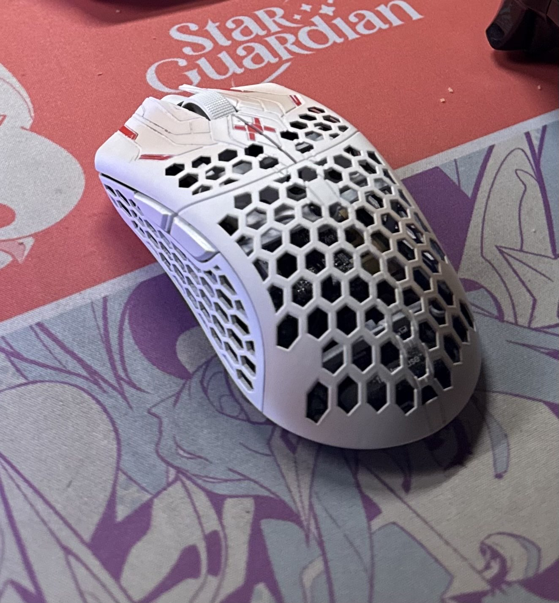
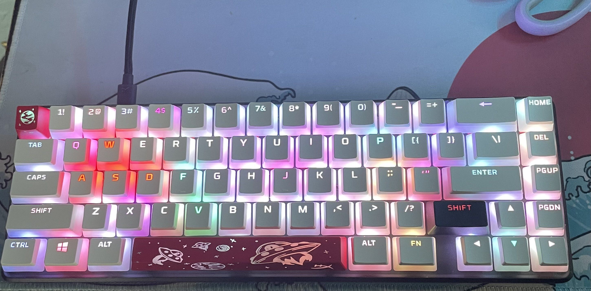
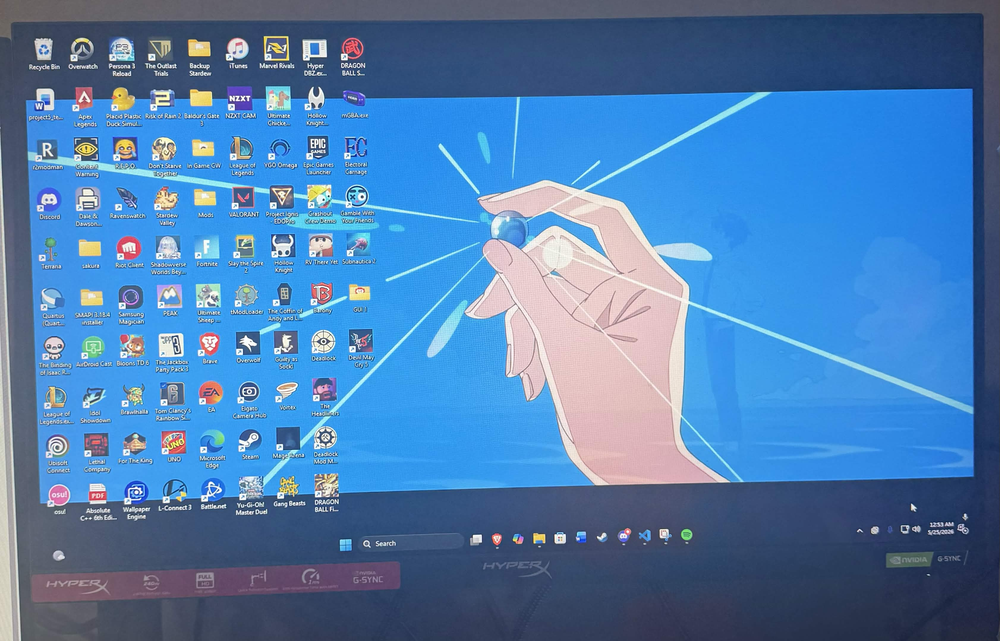
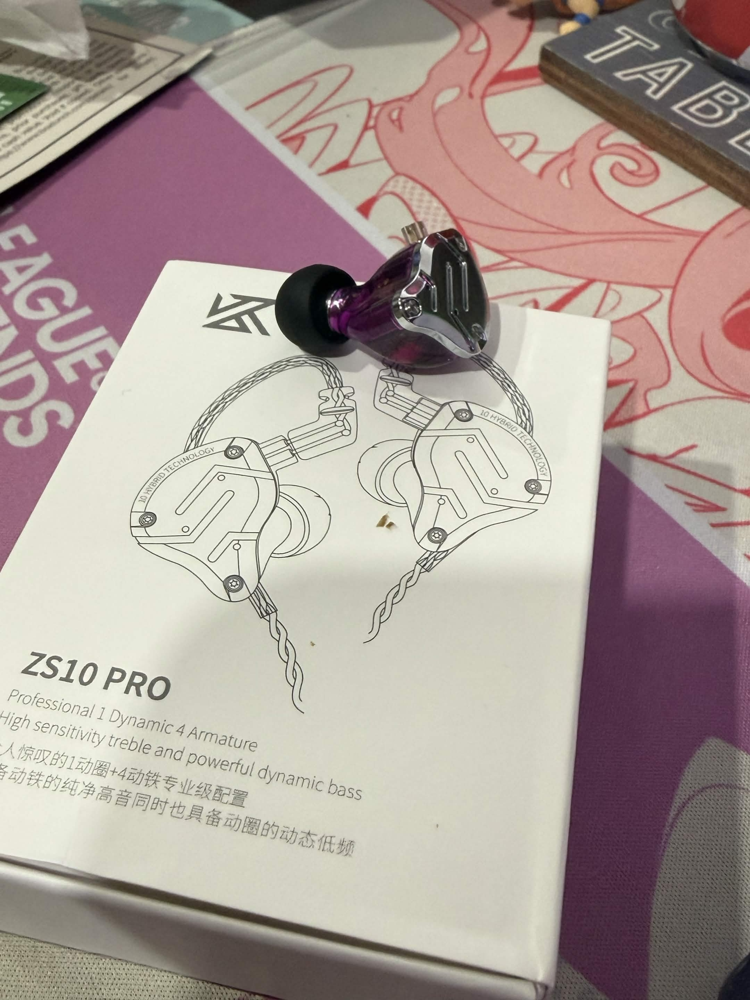
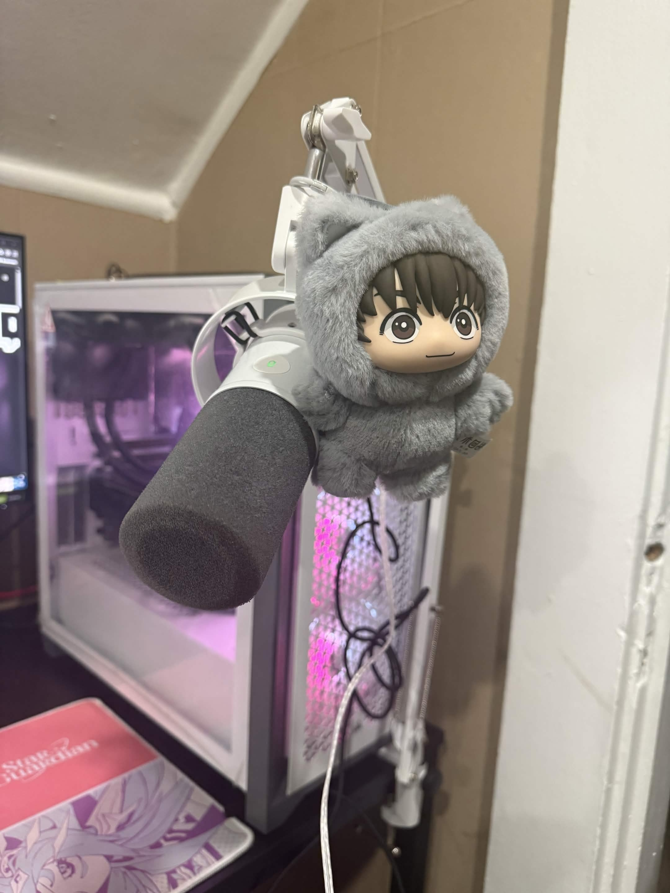

Derek Desk Setup
Overview
This website is made to show the different periphals I use on a day to day
basis. The idea for doing this is to make it easier to show people when
being ask about what kind of mouse I use or what graphic card is in my PC.
Overall, I will add some notes of the things that I own describing my
experience with some of the items I currently have to help those looking
for an upgrade or where to start.
Table of Contents
The table above shows the current gaming gear I own. Each item contains a
link to fast travel on this page and where to buy online, for those
interested. I also provided a quick item cost. Many of these items do go
on sale, but sadly the mouse and keyboard may no longer be up for sale due
to limited units.
Gear
Gaming Mouse

- ULX - Pro Series
- Dimensions: 5"L x 2.25"W x 1.5"H
- Weight: 35 grams
- Connectivity Technology: USB wireless dongle
-
This mouse was specifically chosen because of its weight of 35 grams
as well for it being wireless. It's considered one of the lightest
gaming mouses, but the only drawback is its price. To spend $200 for
a gaming mouse felt absurd, but when I saw the news of a
collaboration with one of the best Apex Legends player Aceu I knew
that I had to buy it. At the end it was worth paying the $200.
Keyboard

- Aluminum body
- Dimensions: 13.8"L x 5.8"W x 1.7"H
- Button Quantity: 65 keys
- Connectivity Technology: USB-C
-
I wanted a minimilistic look and so after some research I found this
keyboard. It made with an aluminum case in which gives it that nice
premium look and feel while also still being light for daily
carries. In the next few days though I will be switching over to the
Wooting 80HE Tenz Edition.
Monitor

- Maximum Resolution: 1920 x 1080
- Screen Size: 24.5"
- Refresh Rate: 240 Hz using DisplayPort
-
This is my main monitor I use for gaming and work. It offers a high
refresh rate while also being reasonable in size. Great for gaming
and working on assignments. I picked this monitor up during a sale
in order to have dual-monitor setup. The previous monitor is used
for either discord or having a browser open.
Audio Setup
Headset/Earbuds

- In-Ear Monitors
- Noise Control: Sound Isolation
- Headphone Jack: 3.5 mm Jack
-
I switch over to IEMs (In-Ear Monitors) recently. These are very
comfortable and also affordable. When it comes to listening to music
or playing video games the audio becomes crystal clear. I am able to
wear these for long sessions. Highly recommend for those who want to
start wearing IEMs. For those who are looking for a headset as an
alternative I used the
Hyperx Cloud Alpha Itachi Edition.
Microphone

-
Special Feature: Boom Arm Stand, Mute Function, Noise Reduction,
Volume Control
- Frequency Range: 50Hz-16KHz
- Connectivity Technology: USB, XLR
-
The Fifine Dynamic Microphone is an affordable microphone that
offers many features. Many of my friends are able to hear my voice
with no issues. With just a tap from my finger I can mute without
needing to go to discord or flipping a switching. I bought this as
my headset mic tend to have issue so instead I kept my headset and
bought this external microphone.
Back to Top